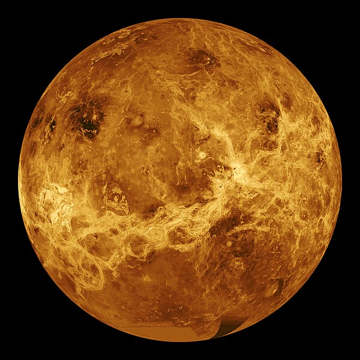

Венера
Венера — вторая планета Солнечной системы, очень близкая по размеру и другим физическим характеристикам к Земле. Шестая по размеру планета Солнечной системы, наряду с Меркурием, Землёй и Марсом принадлежащая к семейству планет земной группы. Из всех планет Солнечной системы Венера имеет наименьший эксцентриситет орбиты, равный 0,7 % (её орбита почти идеально круглая). Она делает один оборот вокруг Солнца за 224,7 земных дня. Венера не имеет естественных спутников. Венера имеет плотную атмосферу, состоящую более чем на 96 % из углекислого газа. Является самой горячей планетой Солнечной системы, средняя температура на её поверхности составляет 462 °C. Среднее расстояние Венеры от Солнца — 108 млн км (0,723 а. е.).Поскольку Венера ближе к Солнцу, чем Земля, она всегда наблюдается вблизи него. На Земле её можно наблюдать только непосредственно перед восходом солнца и после захода солнца. Обычно это самое яркое небесное тело после Луны и Солнца. По размерам Венера довольно близка к Земле. Радиус планеты равен 6051,8 км (95 % земного), масса — 4,87⋅1024 кг (81,5 % земной), средняя плотность — 5,24 г/см³. Ускорение свободного падения равно 8,87 м/с².
Венера была известна древним вавилонянам (ок. 1600 г. до н. э.) и, вероятно, была известна в доисторические времена из-за её высокой яркости. Её символ — стилизованное зеркальное отражение богини Венеры: круг с маленьким крестом внизу (♀).